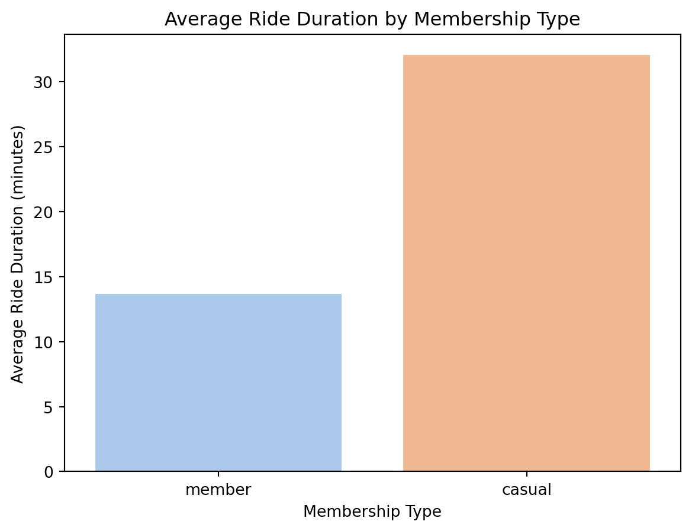
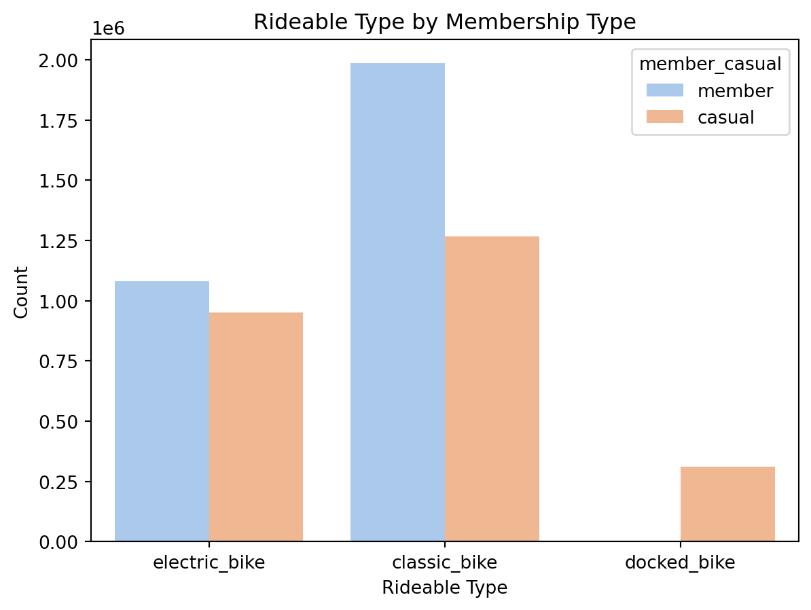
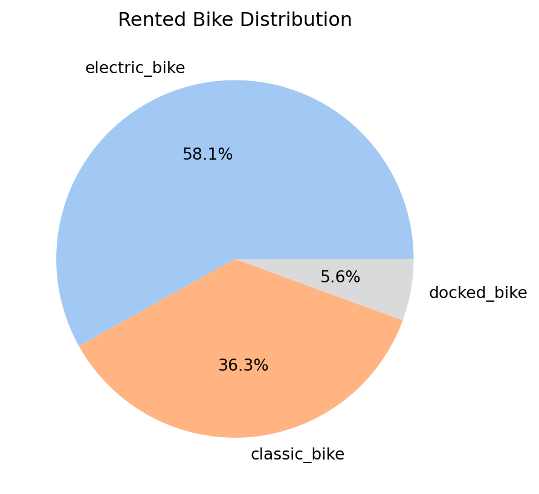
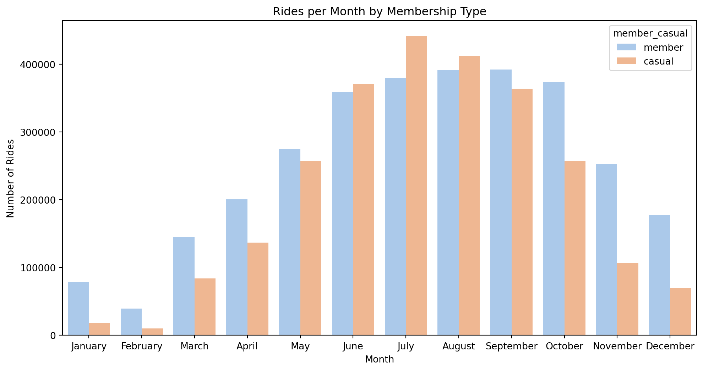
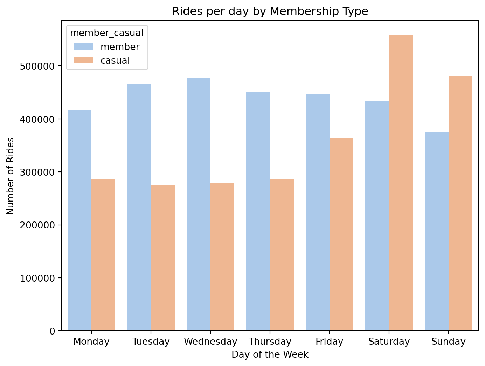

import pandas as pd
import matplotlib.pyplot as plt
import seaborn as snsCyclistic - How does a bike-share navigate speedy success?
1 Background
Cyclistic launched its bike-share program in 2016, growing to 5,824 bikes across 692 Chicago stations. Riders can unlock a bike at one station and return it to another. The program offers flexible pricing: single-ride and day passes (casual riders) and annual memberships (members).
2 Objective
This analysis explores historical trip data to compare casual riders and members, aiming to uncover trends that can inform marketing strategies to convert casual riders into members — Cyclistic’s most profitable segment.
2.1 Key Question
- How do annual members and casual riders use Cyclistic bikes differently?
3 Data Sources
The data has been made available by Motivate International Inc. under this licence. Download the data here: 12 months (year 2021) of Cyclistic trip data
4 Analysis(data prep with supporting visuals)
trip02 = pd.read_csv('files/202102-divvy-tripdata.csv')
trip03 = pd.read_csv('files/202103-divvy-tripdata.csv')
trip01 = pd.read_csv('files/202101-divvy-tripdata.csv')
trip04 = pd.read_csv('files/202104-divvy-tripdata.csv')
trip05 = pd.read_csv('files/202105-divvy-tripdata.csv')
trip06 = pd.read_csv('files/202106-divvy-tripdata.csv')
trip07 = pd.read_csv('files/202107-divvy-tripdata.csv')
trip08 = pd.read_csv('files/202108-divvy-tripdata.csv')
trip09 = pd.read_csv('files/202109-divvy-tripdata.csv')
trip10 = pd.read_csv('files/202110-divvy-tripdata.csv')
trip11 = pd.read_csv('files/202111-divvy-tripdata.csv')
trip12 = pd.read_csv('files/202112-divvy-tripdata.csv')all_trips = pd.concat([trip01, trip02, trip03, trip04, trip05, trip06, trip07, trip08, trip09, trip10, trip11, trip12])all_trips.info()
all_trips.shape<class 'pandas.core.frame.DataFrame'>
Index: 5595063 entries, 0 to 247539
Data columns (total 13 columns):
# Column Dtype
--- ------ -----
0 ride_id object
1 rideable_type object
2 started_at object
3 ended_at object
4 start_station_name object
5 start_station_id object
6 end_station_name object
7 end_station_id object
8 start_lat float64
9 start_lng float64
10 end_lat float64
11 end_lng float64
12 member_casual object
dtypes: float64(4), object(9)
memory usage: 597.6+ MB(5595063, 13)all_trips.drop(['start_station_id', 'start_lat', 'start_lng', 'end_lat', 'end_lng', 'end_station_id'], axis=1, inplace=True)df = all_trips.copy()df['started_at'] = pd.to_datetime(df['started_at'])
df['ended_at'] = pd.to_datetime(df['ended_at'])
mask = df['ended_at'] < df['started_at']
df.loc[mask, 'ended_at'] += pd.Timedelta(days=1)
df['ride_duration'] = round((df['ended_at'] - df['started_at']).dt.total_seconds() / 60 , 2)df['month'] = df['started_at'].dt.month_name()
df['day'] = df['started_at'].dt.day_name()df.head(3)| ride_id | rideable_type | started_at | ended_at | start_station_name | end_station_name | member_casual | ride_duration | month | day | |
|---|---|---|---|---|---|---|---|---|---|---|
| 0 | E19E6F1B8D4C42ED | electric_bike | 2021-01-23 16:14:19 | 2021-01-23 16:24:44 | California Ave & Cortez St | NaN | member | 10.42 | January | Saturday |
| 1 | DC88F20C2C55F27F | electric_bike | 2021-01-27 18:43:08 | 2021-01-27 18:47:12 | California Ave & Cortez St | NaN | member | 4.07 | January | Wednesday |
| 2 | EC45C94683FE3F27 | electric_bike | 2021-01-21 22:35:54 | 2021-01-21 22:37:14 | California Ave & Cortez St | NaN | member | 1.33 | January | Thursday |
avg_ride_duration = round(df['ride_duration'].mean(), 2)
print(f"The average ride duration is {avg_ride_duration} minutes.")The average ride duration is 21.97 minutes.# // Average ride between membership types
sns.barplot(x=df['member_casual'], y=df['ride_duration'], palette="pastel", hue=df['member_casual'], errorbar=None)
plt.title('Average Ride Duration by Membership Type')
plt.xlabel('Membership Type')
plt.ylabel('Average Ride Duration (minutes)')
plt.show()
# Different types of rideable bikes
sns.countplot(x='rideable_type', hue='member_casual', data=df, palette="pastel")
plt.title('Rideable Type by Membership Type')
plt.xlabel('Rideable Type')
plt.ylabel('Count')
plt.show()
# Rented bike distribution
plt.pie(df['rideable_type'].value_counts(), labels=df['rideable_type'].unique(), autopct='%1.1f%%', colors=['#A1C9F4', '#FFB482', "#DBDADA"])
plt.title('Rented Bike Distribution')
plt.show()
# Rides per month
plt.figure(figsize=(12, 6))
sns.countplot(x=df['month'], hue=df['member_casual'], palette="pastel", order=df['month'])
plt.title('Rides per Month by Membership Type')
plt.xlabel('Month')
plt.ylabel('Number of Rides')
plt.show()
# Rides per day of the week
plt.figure(figsize=(8, 6))
sns.countplot(x=df['day'], hue=df['member_casual'], palette="pastel", order=['Monday', 'Tuesday', 'Wednesday', 'Thursday', 'Friday', 'Saturday', 'Sunday'])
plt.title('Rides per day by Membership Type')
plt.xlabel('Day of the Week')
plt.ylabel('Number of Rides')
plt.show()
5 Summary of Analysis
Usage Patterns:
On average, casual riders utilize bikes more frequently than annual members.
Bike Preferences:
Both casual and member users predominantly use classic and electric bikes, with minimal usage of docked bikes. Notably, annual members did not use docked bikes at all.
Seasonal Trends:
Bike rentals peak during the summer months, from June to September, with elevated usage extending into October.
Day-of-Week Trends:
Member users tend to ride more frequently on weekdays, while casual users show a significant increase in activity during weekends.
6 Recommendations
Weekend Membership Plan: Introduce a weekend-specific membership plan to attract casual riders who predominantly use bikes during weekends.
Seasonal Discounts: Offer discounted annual membership plans during the summer months to capitalize on the peak rental season and encourage conversions from casual riders.
Incentivized Returns: Implement a points-based system for annual members, rewarding riders who return bikes to designated stations. Points can be redeemed for discounts or benefits, encouraging better usage of docked bikes and targeting casual users to transition into membership plans. This recommendation stems from observations of many bikes not being returned to stations.